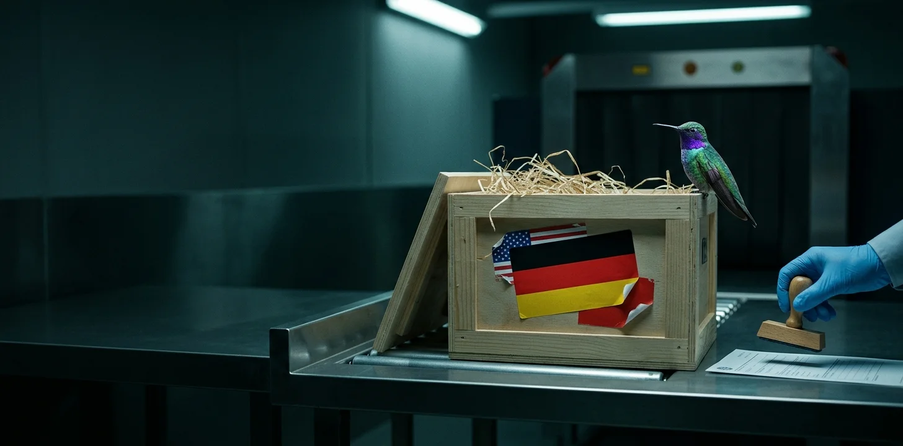

On October 3rd, 2026, the Day of German Unity, Aleph Alpha put a model called Kolibri on Hugging Face: 78 billion parameters, German and English only, trained from scratch, free under Apache 2.0.[1] Two years earlier, on September 5th, 2024, its then-CEO, Jonas Andrulis, told Bloomberg why building one was no longer enough. As TechCrunch relayed it the same day: “Just having a European LLM is not sufficient as a business model. It doesn’t justify the investment.”[2] And seventeen days before Kolibri shipped, the company had signed a definitive agreement, not yet closed, to combine with Cohere, of Toronto.[3]
So a company that said a European model alone doesn’t pay, and that has agreed to operate under another company’s name, has just built one. Why? Look at what it built. The United States, China, and Europe are all inside it, and it shows how each competes in AI in 2026.
Here is what I think: the investment that a European LLM “doesn’t justify” has collapsed. I’m not going to tell you Kolibri beats the frontier models. It doesn’t claim to. It is large enough for the job, and that is the point.
If you run technology or allocate capital in Europe, read Kolibri as a bill of materials: what it cost, who supplied each part, and what each supplier can take back. Its own documents let you start counting. Before I do: I was Chief Evangelist at Arcee AI (see below) until November 2025.
What does a from-scratch model cost in 2026?
Aleph Alpha’s model card gives the bill in GPU-hours: 392,000 for pre-training on 768 NVIDIA B200s over 21 days, 90,000 for a second phase on reasoning and code data, 10,000 to stretch the context window. That is 492,000 GPU-hours.[4]
The technical report thanks its cloud provider once: Verda, which publishes its prices. A B200 rents for $7.13 an hour on demand, and 25% less on a two-year commitment. Multiply it out, and you get $3.5 million at the first rate and $2.6 million at the second.[5] A cluster this size is quoted privately, and Aleph Alpha hasn’t published what it paid.
That number leaves things out: an earlier model whose pre-training was restarted once, the small experiments before the real run, the fine-tuning, and every GPU-hour spent generating training data with other people’s models. So the bill starts at roughly $3 million, and almost none of the rest is published.[6] Verda gave the only outside hint on October 5th, 2026: “Training a model like Kolibri requires over a thousand GPUs running around the clock for months.” A thousand GPUs for three months would cost about $15 million (my calc; the three is my assumption).
In October 2021,I wrotethat replicating a 530-billion-parameter model would cost “close to $100 million” in servers, networking and hosting, and asked which organizations had a use case that justified even $10 million. Very few, I said. Five years later, you can rent the training run of a serious model for less than that $10 million.
The serving bill chose the size
Why 78 billion parameters, and not 400? And why only German and English? Because Aleph Alpha builds for ministries and manufacturers who want to run this on their own machines, and the company sized the model based on serving cost, not a leaderboard.
Start with what the 78 billion buys. Kolibri is a mixture-of-experts model, so only 3.46 billion of the 78 billion parameters do any work for any one token. That splits the serving bill in two: you pay for speed on 3.46 billion, and for memory on all 78 billion.[7] So the question of size is a question of memory.
The launch post is plain about it: bigger was better and more expensive, and “The latter drove the decision”. Then the team estimated what each size would cost to serve: “123B can handle only 3 long-context 256k-token user queries on two H100s, while 78B handles 18 concurrent requests”.[8] Aleph Alpha's own estimate says six times as many long-document users on the same two GPUs won the argument.
The two languages also follow from the budget. The card calls it “a deliberate choice of depth over breadth”, and the report prices a language: about a fifth of the pre-training tokens, i.e., 4 trillion for German, when the open German datasets held roughly half that. I’d expect French or Spanish to cost that again each. The report lists other European languages as future work.[7]
How do you tune a model you can only train once?
A full run costs millions, so choices are tested on small copies first. Aleph Alpha used two network shapes: one with 0.6 billion active parameters trained on 97.6 billion tokens, and one with 2.1 billion trained on 327.6 billion. A third, half as wide as Kolibri, tuned the training settings. The hard part is carrying what you learn up to full size.
For its earlier model, the team took the common approach: fit scaling laws, i.e., formulas that predict the best training settings from small runs, on runs of 100 to 430 billion tokens, then extend them to 7.5 trillion. Reused for Kolibri, those laws gave “unrealistic hyperparameter predictions”. That is a useful admission. A scaling law is not a law of nature. It is a curve fitted to one model, one context length, and one token budget, and this one stopped working when all three changed.
So the team dropped them and extrapolated each candidate setting's loss curve on the half-width model. The result still has to hold at full width. To do that, the team used a known technique called µP: it scales the starting weights and learning rates with the network width, so settings tuned on a narrow model also work on a wide one.
The size came out of the same sweep I quoted above. At 3.4 billion active parameters, the team tried 42, 82, and 123 billion in total; the 82 is the test configuration closest to the 78 that shipped. Going from 42 to 82 improved loss and accuracy. Going to 123 improved them “only slightly further”, and at a 4,000-token context it decoded 32% slower than 42, where 82 was 13% slower.
That is all “Pareto frontier” means in the report’s title: no other model it tested is both better and cheaper to run. On one of the report’s charts, three models sit on that frontier: “Qwen3.5 35B-A3B, Kolibri and Qwen3.8 27B”. Two of the three are Alibaba’s, and one of those is Kolibri’s teacher. The cost on that chart is a count of active parameters, not a measurement. The chart behind the title plots text decoded per second per GPU, as Aleph Alpha measured it. Memory, which chose the size, is on neither.
The last stage of training is reinforcement learning against verifiable rewards: the model attempts a task and gets a grade from a program that can check the answer and from a frozen judge model for proofs and conversations. Kolibri ran one training run of 1,000 steps on 256 B300 GPUs across 38 environments. They are general: software engineering and terminal use make up 36% of the mix, math and reasoning 18%, and seven are German variants. No training environment is named for an industry. The industries appear on the test side: five in-house stand-ins for assistants Aleph Alpha runs for customers, in semiconductors, the German public sector, aerospace, automotive supply, and industrial drives. Two of the five have 11 and 26 questions.
Generating the attempts “can dominate the cost of RL”, so the model that writes them runs with 8-bit weights and an 8-bit cache, which the report says is two to three times faster. The trainer copies that rounding, so that both sides stay the same model. In April,I called the checking step the verification tax: it runs on CPUs, and it can limit how fast a model learns. The run I described then, at Together AI, used more than 100 sandboxes at once on 32 GPUs. Kolibri’s averaged 25,000, against 480 for Aleph Alpha’s earlier model. They ran on the CPUs the GPU servers “keep idle”: 112 cores per node across 31 nodes, about 3,500 total. They paid the tax with cores that came with the rented GPUs.
The report doesn't give MFU, model FLOPs utilization: the share of a chip’s peak arithmetic that training actually uses. It is the key efficiency metric in pre-training. It is also a favorite vanity metric for AI labs. In reinforcement learning, the key metric is simpler: how long the GPUs sit idle, waiting for the CPUs to check the answers. What Aleph Alpha publishes is throughput, a median of about 16,500 tokens per second per GPU in pre-training, and reliability: 38 unplanned interruptions that cost 28.7 hours in total. It publishes no utilization figure for any stage. My back-of-the-envelope estimate from its own figures is 15% to 22% for pre-training, if the run used 16-bit arithmetic: 15% counting the active parameters alone, 22% with attention and the output layer added.[9]
A page from Arcee AI’s book
In January 2026, Arcee AI released Trinity Large: a 400-billion-parameter mixture-of-experts model, pre-trained on 2,048 B300s by a company of about thirty people, as reported. Arcee AI’s own account puts the whole six-month effort, including smaller models, at $20 million all in. The Trinity report came out after I left Arcee AI. Kolibri’s report cites it by name for two methods it reuses.[10]
The book is the same: your own pre-training run, mixture-of-experts, open weights, a rented cluster, and a detailed report. Aleph Alpha runs it at a fifth the size, narrows it to two languages, and sells it in its home jurisdiction.
The two differ in what they give away. Arcee AI published its raw pre-training checkpoints, and named no teacher. Aleph Alpha kept its earlier model, Kolibri Origin, to itself, and named the models that helped build Kolibri. Neither released its full training set, though Aleph Alpha’s German web dataset is public. Kolibri’s license adds a sentence under the Apache grant: it “does not extend to underlying code, model architecture, parameter settings or any training method.”[11]
So the weights are free, and the recipe is printed, but the pantry is locked.
Who wrote the training data?
Like Arcee AI and NVIDIA, Aleph Alpha had other models write part of it.
About 24% of Kolibri’s pre-training data, 4.8 trillion tokens, is synthetic. Google’s Gemma 4 rewrote English web pages into cleaner forms. For German, Mistral’s NeMo model did the rewriting, and the report calls the result “the single largest source of German in the model”.[12]
Then comes the part that teaches the model to reason, call tools, and hold a conversation. The report: “The main models we use to generate this data, and to regenerate parts of the open datasets, are GLM-5.2, GLM-5.3 and Qwen3.8-27B.” The first two come from Z.ai; the third from Alibaba. The summary Aleph Alpha published under the EU’s AI Act template lists the same models by their Hugging Face repositories, including an 8-bit copy of GLM-5.2. That tells me the company downloaded the weights and ran them on its own machines.[13]
Do the licenses allow it? I checked instead of assuming. On October 5th, 2026, I read the license terms of eleven of the twelve outside models in the recipe. All but three of them are plain Apache 2.0 or MIT. GLM-5.3 has its own license, which adds a security review for the largest companies selling model access. None restrict training another model on their outputs.[15]
gpt-oss and Gemma 4 are also Apache 2.0, so the licenses are no different. What differs is which models get released. Here is how I read it: America gives away models good enough to filter and rewrite, and keeps the ones good enough to teach behind an API, while Chinese labs give away the teachers. That may be changing. On October 5th, 2026, Reflection AI, an American lab, announced Beam, a 501-billion-parameter model it calls competitive with GLM-5.2, and promised the weights under Apache 2.0 in October.[15]
And where did the Chinese teachers learn? On September 8th, 2026, three American agencies published an advisory accusing six Chinese labs, including Z.ai and Alibaba, of distilling US frontier models at industrial scale, which they called “the core—not merely a supplement—of their AI development strategy.”[16] The advisory names the companies, not the models Kolibri used. If the agencies are right, the chain would run like this: American frontier models, illicitly, into Chinese open weights, and from there, lawfully, into a German model.
On September 28th, 2026, Aleph Alpha published a study of Chinese political alignment in open models: six Chinese models gave balanced answers to only 17% to 41% of 967 sensitive prompts, compared with 70% for Claude Sonnet 5 and 92% for Mistral Small. Thus, generated conversations with open-ended answers pass through a filter that drops those that don't. The judge in that filter is gpt-oss-120b, from OpenAI.[14] . The study adds: “Anyone who is building their first frontier model effectively has to fall back on open-weight models and work with the resulting political behavior.” It says it has adopted its own remedies, and its model card warns that Kolibri “may reproduce political biases present in its training data”.[17] But the study tests no model from Z.ai, the lab behind two of Kolibri’s three main teachers.
Three blocs, one model
In March,I wrotethat a country without a frontier lab has three bad choices: build its own model, buy American, or download Chinese weights. In June,I put the three blocs in one line: the United States restricts, Europe regulates, Chinese labs ship.[18] Both need an update, because Kolibri doesn’t choose. It downloads, rents, and builds.
American companies supplied every GPU the documents name, and gave away the filter and the rewriter. So far, they kept their teachers. So the United States competes at the top and at the bottom of the stack: rent the silicon to everyone, sell the frontier by the token, and let the rest of the world assemble whatever fits in between.
Two Chinese labs supplied the main teachers, under licenses that charge nothing. So Chinese labs compete on distribution. Their work ends up inside other people’s products: in Mistral’s catalog, and now in a German model built for ministries.[19]
Europe supplied the cloud, the work of assembling a German corpus, the team, the intended customers and the law. That is the last mile, a consolation prize at the frontier. But it is the market Aleph Alpha says it builds for, and Europe’s rules do one useful thing here: the reason I can list Kolibri’s teachers by repository is that the AI Act made Aleph Alpha fill in a form. Give yourself a pat on the back, EU bureaucrats.
In June,I saidmy read would break if someone shipped “a model under 100 billion parameters that matches the leaders.” Kolibri is under 100 billion, and it doesn’t claim to match the leaders. So my reading holds: someone still has a hand on every door in this model.[20]
Is it any good?
On Aleph Alpha’s own test suite, Kolibri scores 75.5 in English and 70.8 in German. OpenAI’s gpt-oss-120b, a bigger open model with more active parameters, scores 72.3 and 70.2 on the same suite. The closest model in Kolibri’s class, Alibaba’s Qwen3.5 35B, is a point or less behind in both languages; call it a tie, at less than half Kolibri’s size. And Qwen3.8-27B, one of Kolibri’s teachers, beats it by 4.7 points in English and 9.1 in German, while activating nearly eight times as many parameters per token.[21]
So why would a German ministry pick Kolibri over a Qwen half its size? On the table, it wouldn’t. On Aleph Alpha’s own German public-sector test, Kolibri scores 75, the small Qwen 80 and the dense Qwen 89. It would pick Kolibri on eligibility. When Hessebought from Mistral, in an award published on July 2nd, 2026 and made without a call for competition, one mandatory requirement was that the vendor’s models be developed in the European Economic Area or a country the EU deems adequate. Qwen fails that line before anybody runs a benchmark. Hesse found only Mistral eligible, and on the same public-sector test Mistral Small 4, the one Mistral model on Aleph Alpha’s table, scores 50. A German company you can sign with, audit, and sue passes it. A different Qwen of that size, Qwen 3.6 35B, echoed Beijing’s framing on 80% of sensitive prompts in Aleph Alpha’s own study, and Kolibri’s score on that test is the number its buyers are owed. Until it is published, Kolibri is how a ministry with Hesse’s requirement buys what Chinese models taught.[21]
And Mistral?
Mistral appears twice in this story. Three times, if you count my title: in July 2024, Mistral announced its Large 2 model under the headline “Large Enough”.[22]
It is in the pre-training data, as NeMo, a now-deprecated 12B multilingual model co-built with NVIDIA. The results table also shows that Mistral Small 4 trails Kolibri by 12.4 points in English and 9.4 in German on Aleph Alpha’s suite, though it leads Kolibri on one knowledge index in the same report. And it is missing from the list of teachers: of the models Aleph Alpha names for writing reasoning traces, none is European.[22]
Now read Cohere’s release. The combined company will operate as Cohere and, the release says, “will effectively create the first transatlantic sovereign AI solution”. In it, Ilhan Scheer, Aleph Alpha’s chief executive, calls Cohere “a strong strategic fit” for its “specialized language models for governments and regulated industries”. Neither company’s announcement names Mistral, so what follows is my reading. Cohere is not new to Europe: in June, it wrote of “our growing momentum across the UK and Europe”. What Aleph Alpha adds is a model built in Germany, for German, under European law, and Cohere buys Aleph Alpha and that model to go deeper into the European enterprise market. That is precisely where Mistral is trying to make money.[22]
Aleph Alpha has tried this before
In 2023, some of its investors were also its customers. Bosch and the Schwarz Group led a round that included SAP, and the company’s own release says it included “preconsumption licenses”, i.e., prepaid orders. What is different now is the product. The weights it published in 2024 were licensed only for research and education. Kolibri is Apache 2.0, runs on two GPUs in the buyer’s own room, and may soon have Cohere’s sales force behind it.[23]
What would have to break
Can Europe compete this way? Yes, as long as you are clear about what “this way” means.
It works on one condition: the scores hold up when somebody else measures them. I ran no benchmark of my own. If an independent evaluation puts Kolibri well below its class, the recipe is cheap because it is bad, and I will say so. The same goes for the bill: if the unpublished part turns out to be many times the training run, the $3 million tells you little.
It also works only as long as two other parties allow it. The Chinese labs own the license file, and a license can change with the next release, as GLM’s did between versions 5.2 and 5.3. Washington owns the chips, which an export rule could reach, and Axios reported in July that restrictions on Chinese models were under discussion.[24] If the teachers go, the cheap part of the recipe stays cheap, and the data becomes the wall.
The chips are American. The teachers are Chinese. On its maker’s own public-sector test, a Chinese model half the size scores higher. Only Europe could supply a legal entity, a form, and a buyer’s requirement that keeps the better model out of the room. I don’t call that an AI industry. I call it a customs office.
Andrulis was right in 2024: a European LLM alone isn't a business model. Kolibri doesn’t prove him wrong. It shows the business model: eligibility, sold as a service, and under a Toronto company’s name if the deal closes. The launch post names the real asset itself: “the most durable thing we built this year is not the pipeline, it is a team with the proven capability to build, post-train, and ship LLMs from raw data at high velocity.”[25] Mistral already sells that eligibility: Hesse found that only it could meet every mandatory requirement.
If you fund or buy AI in Europe, stop asking who will build our OpenAI. Nobody needs to, at about $3 million a run. A model like this is a component, like a database, and you should buy it like one. Ask what it costs, who trained it, whose switch it sits behind, and what you are really paying for. With Kolibri, you pay for a well-documented, competent model that is allowed to bid, not the one that scores highest.
Notes
[1] Aleph Alpha,Kolibri-1 model card, Hugging Face, accessed October 5th, 2026: “Total parameters | 78B (78,103,074,560)”, “Active parameters / token | 3.46B (3,457,573,120)”, “License | Apache 2.0”, “Release Date | 3rd of October 2026”, and under Model Dependencies, “None. The model was trained from scratch.” Second document: Aleph Alpha,“Kolibri: A Sovereign European Model on the Pareto Frontier”, technical report, 189 pages, abstract. The launch post opens “On the Day of German Reunification”: Aleph Alpha,“Kolibri Has Landed”. Both are the company’s own documents; no independent party has confirmed the parameter count beyond the Hugging Face file listing, whose tensor sizes sum to the same figure.
[2] As relayed byTechCrunch, September 5th, 2024, relaying an interview given toBloombergthe same day. TechCrunch describes him as chief executive. The Bloomberg article is paywalled and was not read; the quote is reported, not confirmed at source.
[3] Cohere,“Cohere and Aleph Alpha sign agreement”, September 16th, 2026: a “definitive business combination agreement”, “subject to final regulatory approvals”, “Operating globally as Cohere”, “following the release of our planned partnership in April of this year”. I call it a purchase on that basis, onHandelsblatt, October 5th, 2026, which writes of a “De-facto-Übernahme” by Cohere, and onReuters, April 24th, 2026, which reported the deal as an acquisition at an undisclosed price and relayed Handelsblatt’s report that Cohere’s shareholders would hold about 90% of the combined company; neither company has stated a split. The release plans a company “dual-headquartered in Berlin and in Toronto”. Aleph Alpha’s ownrelease on Kolibri, dated October 5th, 2026, says the company operates independently until closing.
[4] TheKolibri-1 model card, Computing Resources row: “Hardware: 768 NVIDIA B200 (96 HGX 8xB200 nodes) [...] Time: 21 days (511h, 392k GPUh)”, “Mid-training: 5 days, 90k GPUh”, “Long-Context: 13h, 10k GPUh”. Second document: Aleph Alpha,“Kolibri Has Landed”, October 3rd, 2026, which gives the same 768 B200s, 21 days and three stages. The technical report, Appendix B.7.2, gives a net figure of 377,000 GPU-hours for the pre-training run; I use the card’s figure. Author’s calculation from the card: 392,000 + 90,000 + 10,000 = 492,000.
[5] Verda,pricing page, read October 5th, 2026 andarchivedthe same day: “1x B200 SXM6 180GB [...] $7.13/h” on demand, and “2 years 25% off on-demand”. Author’s calculation from the card and the price list: 492,000 × $7.13 = $3,507,960. Author’s calculation at the two-year rate: (492,000 × $7.13) × 0.75 = $2,630,970. For comparison, AWS listed a B200 at $12.355 per hour inCapacity Blockson October 1st, 2026. The 25% is Verda’s published discount for single instances; its page says clusters above 144 GPUs are quoted on request, so the lower figure assumes a comparable discount. These are list prices; the contract between Aleph Alpha and Verda is not public.
[6] Thetechnical report, Acknowledgments, p. 114: “We thank Verda for supplying the GPU compute infrastructure behind this work”. Table 26, p. 95, gives “GPU hours, B300 equivalents” of 16,900 for the final reinforcement-learning run (and 5,500 for Kolibri Origin’s); Verda’sprice listshows a B300 at $8.97 per hour on October 5th, 2026. Author’s calculation from the report and the price list: 16,900 × $8.97 = $151,593. Themodel cardstates that its energy estimate “excludes SFT and RL, peak, idle and low-load states, and proxy and ablation models”; I found no GPU-hour figure for fine-tuning, for the ablations or for data generation with the teacher models in the card, the report or the launch post. The restart is in“Kolibri Has Landed”: “We stopped the Kolibri Origin pre-training after a few trillion tokens and restarted it from scratch”. Verda’s own account:“Aleph Alpha releases Kolibri, a sovereign open-weight LLM trained on Verda”, October 5th, 2026, which also says the model was trained “in European data centers we own and operate” on a fleet “custom-built to Aleph Alpha’s requirements”. It gives no GPU count, hours or price. Author’s calculation, assuming 1,000 GPUs for 90 days at the B200 rate: (1,000 × 2,160) × $7.13 = $15,400,800. My 2021 figure priced the purchase of DGX servers:“Large Language Models: A New Moore’s Law?”, October 26th, 2021.
[7] TheKolibri-1 model card, Model Architecture table andconfig.json: 50 layers, 384 routed experts and one shared per layer, six selected per token, a sliding window of 512 preceding tokens in 40 layers and full attention in 10, “float8_e4m3fn” weights, “Model memory footprint: ~78 GB”. On languages: the card’s “deliberate choice of depth over breadth”; thetechnical report, section 2.3.2.2: “This leaves us with a lower bound of 4 T German tokens needed for training” and “The open datasets in the upper part of Table 9 add up to around 1.94T tokens”; its conclusion names “extending multi-lingual capabilities to European languages” as an area of interest. That each further language would cost about as much is my inference from those figures; the report does not say so. Forty of the fifty layers look back 512 tokens and ten read the whole context. Thetechnical reportpresents two methods as new, a tokenizer training method it calls UniBPE and a load-balancing technique (”We introduce LEI”); the rest it attributes to published work. Tokenizer: the card reports 4.7 bytes per token on German text, by Aleph Alpha’s measurement; the technical report gives 4.90.
[8] Aleph Alpha,“Kolibri Has Landed”, section “Architecture and pre-training”. The 3 and the 18 are estimates, not measurements: thetechnical report, Table 31, is headed “Estimated maximum number of concurrent 256k-token requests in FP8”, and the 18 belongs to an 82.3B test configuration, not the 78.1B model that shipped. Verda’sprice listshows an H100 at $3.77 per hour on demand on October 5th, 2026. Author’s calculation from the price list: (2 × $3.77) × 730 = $5,504. The post’s sentence continues “and decodes 28% faster”, a figure from a different setup that I leave out. The report’s size sweep ran 42.1B, 82.3B and 122.6B; the post rounds differently.
[9] Thetechnical report. Proxies, section 2.1: “The proxy at scale M has 0.6B active out of 7.8B total parameters trained on 97.6B tokens. The proxy at scale L has 2.1B active out of 30.6B total parameters trained on 327.6B tokens.” Scaling laws, section 2.2: “A common approach fits scaling laws that extrapolate along both dimensions jointly”; “For Kolibri Origin, we fit power laws to the optimal learning rate and batch size at horizons from 100B to 430B tokens and extrapolate them to its pre-training budget of 7.5T tokens. Extrapolating those laws to the Kolibri setting gives unrealistic hyperparameter predictions”; the replacement is µP width transfer plus loss extrapolation on a proxy that “halves the width of the production model”. The Pareto quotation is from Figure 46; the title’s frontier is Figure 1. Size sweep, section 2.1.4: 42.1B, 82.3B and 122.6B total parameters at 3.4B active; “The 122.6B configuration improves loss and aggregate eval accuracy only slightly further”; at 4K context the “82.3B and 122.6B configurations are 13 % and 32 % slower than the 42.1B configuration”, measured on eight H100s. Pareto, section 3.3.3: “Qwen3.5 35B-A3B, Kolibri and Qwen3.8 27B span the convex hull of the Pareto frontier in both languages”, on a chart of the Overall scores against active parameters per token; Appendix A repeats the comparison against decoded text per second per GPU, measured by Aleph Alpha with vLLM on eight B200s. Reinforcement learning, section 3.2: “training it on its own rollouts against verifiable rewards”; “a single training run on 38 environments”; “All environments grade a sequence with a verifiable reward in [0, 1]”; “Our RL training runs on 256 NVIDIA B300 GPUs, split into 32 nodes with eight GPUs each”; “Serving the policy with FP8 weights and an FP8 KV cache raises the throughput of rollout generation, which can dominate the cost of RL, by a factor of two to three in our runs”; “Each non-controller node runs one sandbox executor on the CPUs that the run’s nodes keep idle, so runs never wait on a shared sandbox pool”. Table 26 gives 1,000 optimizer steps for the final run and 25,000 average concurrent sandboxes, against 480 for Kolibri Origin, and its caption says the earlier count covers code sandboxes while Kolibri’s “also includes agentic sandboxes that were added later”; judge model, section 3.2.2.1: the frozen judge “grades math proofs, simulates the user and grades natural-language assertions for the customer-service environment”; Table 58 gives “one per node on 31 nodes, 112 CPUs each”; 31 times 112 is 3,472, my calculation. Section 3.2.5 says the team “moved code execution to local sandboxes running on the CPUs of the training nodes”. The Together AI figures are from my piece“The Verification Tax”, April 10th, 2026, and its note 1. Environments, section 3.2.2 and Figure 32: “The final RL run trains on 38 environments, 31 English ones and 7 German variants”; “Software Engineering and Terminal Use (36.1 %)”; “Math and Reasoning (17.8 %)”; Table 55 lists every environment by name, and none carries an industry name. Table 57: “Five in-house proxies for deployed industry assistants”, namely “Semiconductors, German Public Sector, Aerospace, Automotive Supplier and Industrial Drive Technology”; Figure 44 says they “share no documents or questions with the training data”; section 3.3.3 says “Industrial Drive Technology (11 items) and Automotive Supplier (26) are too small to show a trend”. Utilization: I searched the report for MFU, FLOPs utilization and utilization on October 6th, 2026 and found no such figure for pre-training, SFT or RL. Figure 56 gives per-run median throughputs of 15,985 to 16,593 tokens per second per GPU; Appendix B.7.2: “We observed 38 unplanned interruptions during the net 377 000 GPU hours pre-training run”, and Table 35 totals the recovery time at 28.7 h. MFU estimate, my calculation: training costs about 6 floating-point operations per active parameter per token (2 forward, 4 backward; the rule ignores attention over the context), so 6 times 3,457,573,120 active parameters times 16,500 tokens per second is about 342 teraFLOPS per GPU. Lenovo’sproduct guide for the B200, January 13th, 2026, gives “2.25 / 4.5 petaFLOPS” for BFLOAT16, “Without / with structural sparsity enabled”; NVIDIA’sDGX B200 pagegives the 8-bit figure for eight GPUs. 342 over 2,250 is 15%. Adding the output layer (6 times 2,560 times 128,000 per token) and attention at the 16,000-token pre-training context (10 full-attention and 40 sliding-window layers of 512 tokens, 48 heads of 128, Table 2: 12 times 6,144 times 102,400 per token) raises the count from 20.7 to about 30.3 billion operations per token, or about 500 teraFLOPS per GPU, which is 22% of 2,250. The report does not state the precision of the pre-training run; at the 8-bit peak of 4.5 petaFLOPS the same throughput would be 8% to 11%. Qwen3.8-27B is one of the three teacher models in section 3.1.1. That a scaling law does not travel well is my reading of the report’s own result.
[10] Arcee AI, itslaunch post for Trinity Large, January 27th, 2026: “All in—compute, salaries, data, storage, ops—we pulled off this entire effort for $20 million”, “We trained on 2048 Nvidia B300 GPUs”, and a pre-training run of 33 days. Second document: Varun Singh et al.,“Arcee Trinity Large Technical Report”, arXiv 2602.17004, whose abstract gives “400B total parameters and 13B activated per token”, so Trinity has five times Kolibri’s total parameters and nearly four times its active ones. The team of about thirty is as reported byImplicator. Kolibri’stechnical reportcites “V. Singh et al. 2026” for sandwich normalization (”Each block uses sandwich normalisation”) and for its document buffer, both reused; for the load balancer of Kolibri Origin, which Kolibri replaced with its own; and, as what others do, for the normalization of routing scores.
[11] Arcee AI’sTrinity-Large-TrueBaseis described on its card as a “10T-token pre-anneal checkpoint with no instruction data”. Kolibri Origin: thetechnical report, Table 1, “an internal model that is not released”. The public dataset isAleph-Alpha-GermanWeb, whose card says “The synthetic dataset contains the actual data”; I have not established that it is the same German text Kolibri was trained on. The carve-out is in themodel card, “License and terms”.
[12] Thetechnical report, section 2.3.2, pp. 24 to 27: “Approximately 24 % (4.8T tokens) of our pre-training data is synthetic in origin”, rephrased “with Gemma-4-26B-A4B”; “We use Mistral-Nemo-Instruct-2407 to rewrite organic German documents [...] making it the single largest source of German in the model.”
[13] Thetechnical report, section 3.1.1, p. 53. Second document: Aleph Alpha,Public Summary of Training Content, section 2.5, which lists Gemma-4-26B-A4B, Qwen3-32B, Qwen3.8-27B, Mistral-Nemo-12B, GLM-5.3, “GLM-5.2-fp8” (linked to the zai-org/GLM-5.2-FP8 repository) and Kimi-K2.6. That the weights were self-hosted is my inference from that listing; the report does not state how the GLM models were run. The summary does not list Kimi-K2.7, which the report uses in one reinforcement-learning environment.
[14] Thetechnical report: Kimi-K2.7 and Kimi K2.6 in Appendix I.1, pp. 173 and 176; Qwen3.5-122B-A10B as judge and user simulator, section 3.2.3.2, p. 83; the filter in section 3.1.2.1, p. 60: “we judge the whole conversation, including reasoning traces, with gpt-oss-120b [...] Conversations of the first kind are dropped.” Arcee AI’s precedent, as I covered it at the time: my video of January 28th, 2025 on Virtuoso Lite and Virtuoso Medium v2, archived onjulien.org. The report says in section 3.1.1.5, p. 59: “We acknowledge that several of our teacher models were built in China, so they carry known political biases on sensitive topics”.
[15] License files read on Hugging Face on October 5th, 2026:GLM-5.3(”the Licensee must pass Z.AI’s security review” above “10 billion US dollars” of revenue for a “Model as a Service business”);Qwen3.8-27B, identical to the canonical Apache 2.0 text apart from the copyright line; likewiseQwen3-32B,Qwen3.5-122B-A10Bandgpt-oss-120b;GLM-5.2, MIT;Kimi-K2.7-CodeandKimi-K2.6, “Modified MIT”, with a display requirement above 100 million monthly active users or $20 million of monthly revenue. The eleven models are Gemma-4-26B-A4B and Gemma-4-31B, Mistral-Nemo-Instruct-2407, Qwen3-32B, Qwen3.8-27B and Qwen3.5-122B-A10B, GLM-5.2 and GLM-5.3, Kimi-K2.6 and Kimi-K2.7-Code, and gpt-oss-120b: seven Apache 2.0, one MIT, three with terms of their own. Gemma 4 is Apache 2.0 onGoogle’s license page;Mistral NeMois marked Apache 2.0 on its model card and carries no license file. The twelfth, Cohere’s Command A+, used as one judge, is tagged Apache 2.0 on Hugging Face; I did not read its license file. These are the licenses of the downloadable weights; a hosted API has its own terms. Reflection AI’s own post,“Introducing Beam”, October 5th, 2026: “This month, we will release the weights under an Apache 2.0 license”; it describes Beam as “competitive with larger open models like GLM 5.2” and offers early access by waitlist. As of October 6th, 2026, 01:19 UTC, I found no Beam weights on Hugging Face. AlsoTechCrunch, October 5th, 2026: “Reflection says it will release Beam’s weights and full technical details this month”; its performance claims “haven’t been independently verified”. Announced, not released, as of that date.
[16] NSA, CISA and FBI,advisory AA26-251A, September 8th, 2026, executive summary. The advisory names “DeepSeek, Moonshot AI, Alibaba, MiniMax, StepFun, and Z.AI”. The advisory separates legitimate distillation from what it calls malicious distillation; it describes fraudulent accounts as a technique of “China-based entities” without tying it to each of the six. A search of the advisory for “GLM” and “Qwen3.8” returns nothing: it names companies and model families, not the models Kolibri used. Its claims are the agencies’ and have not been tested in court. Kolibri’s own use is of published weights, which the advisory does not concern. I searched on October 5th, 2026 for a published response from Z.ai or Alibaba and found none;The Register, September 9th, 2026, reported that China had answered by accusing US companies of distilling Chinese models, and wrote that it had sought comment from Chinese AI companies; its story prints none.
[17] Bastian Boll,“Training on the Party Line”, Aleph Alpha, September 28th, 2026. The six Chinese models are two each from Qwen, DeepSeek and Kimi; prompts were generated and answers judged by gpt-oss-120b. Its Figure 1 gives Claude Sonnet 5 at 70% balanced and Mistral Small 2603 at 92%, and the two Alibaba models it tests, Qwen 3.6 35B-A3B and Qwen 3.8 2.4T-A95B, at 17% and 19%; neither is the Qwen3.5 35B or the Qwen3.8-27B of Kolibri’s results table, and the post concedes that “The difficulty of these judgement calls might cause judge bias”. The post: “sovereign models need three things: screening of training data for Chinese political content, targeted alignment data that sets the intended behavior, and evaluation against benchmarks like the one presented here. We have adopted these measures at Aleph Alpha.” The warning is in themodel card, “Political Bias”. No score for Kolibri on this benchmark appears in the card, the report, the launch post or the study, searched October 5th, 2026.
[18] My earlier positions:“Build, Buy, or Download Someone Else’s Politics”, March 6th, 2026, on Singapore, and“Too Dangerous for You, Free for Everyone”, June 28th, 2026: “While the United States restricts and Europe regulates, Chinese labs ship.”
[19] Chips and sites: notes 4 and 6; thetechnical report, p. 4, says the model was trained “on infrastructure in Germany and Finland”. Methods, same report, section 2.1: “The routing scores are sigmoids of the router logits (DeepSeek-AI 2024b)”; its Exact Quantile Balancing extends “Quantile Balancing (QB) (Kimi Team 2026b)”; Arcee AI’s Trinity: note 10. Rewriters, teachers and filter: notes 12 to 13. Code of practice: themodel card, “Aleph Alpha is a signatory of the EU GPAI Code of Practice”. Buyer: note 3; the transaction had not closed as of October 5th, 2026. NVIDIA’sdataset cardfor Nemotron Cascade 2 lists “responses generated by DeepSeek-V3.2” for its math data and Qwen3 models for its agent conversations. Mistral’s catalog: Mistral’spost of August 11th, 2026says its platform “will support third-party open models, starting with Z.ai’s GLM-5.2”; Mistral’schangeloglists GLM 5.3 as generally available from September 28th, 2026 and GLM 5.2 as retiring on October 31st, 2026; see also“Vent Mauvais”.
[20] My piece“Too Dangerous for You, Free for Everyone”, June 28th, 2026: “A frontier-parity model small enough to self-host cheaply (a step change in compression, or a model under 100 billion parameters that matches the leaders) would open a switch-free door for real”. Aleph Alpha’s own definition, in“Kolibri Has Landed”: “Sovereignty, for us, combines two dimensions: how we built the model, and how it transfers to our customers.” GLM licenses: note 15.
[21] TheKolibri-1 model card, Evaluation, post-training table, rows “Overall (EN)” and “Overall (DE)”: Kolibri 75.5 and 70.8, GPT-OSS 120B 72.3 and 70.2, Qwen3.5 35B-A3B 74.7 and 69.8, Qwen3.8 27B 80.2 and 79.9; the German knowledge average: Kolibri 57.6, GPT-OSS 120B 58.0, Gemma 4 26B-A4B 61.5, Qwen3.5 35B-A3B 61.3, Qwen3.6 35B-A3B 61.0. Author’s calculation from the card, English: 80.2 − 75.5 = 4.7. Author’s calculation from the card, German: 79.9 − 70.8 = 9.1. Two community tests have appeared since the release, each scoring Kolibri alone: atool-calling runposted on Hugging Face on October 4th, 2026 (”Final Score: 86 / 100”, with two safety-critical failures), and Stefan Beierle’spractice testof October 5th, 2026, which reports 96% on a German compliance check with the statute in the prompt and 53% without, and declares no connection to Aleph Alpha. Neither tests another model. Thetechnical report, section 3.3.3, p. 98, says the dense Qwen3.8 27B “activates nearly 8 times as many parameters per token as Kolibri”. All scores are Aleph Alpha’s own runs. The card’s row “German Public Sector”, one of its in-house customer proxies: Kolibri 75.0, Qwen3.5 35B-A3B 80.0, Qwen3.8 27B 89.0. The full row also has GPT-OSS 120B at 77.0, Qwen3.6 35B-A3B at 72.0 and Mistral Small 4 119B-A6B at 50.0; Small 4 is not Mistral’s best model and the notice does not say which model Hesse bought. Hesse:TED notice 453996-2026, a “Verhandlungsverfahren ohne Aufruf zum Wettbewerb” (negotiated procedure without a call for competition); its market survey found that “lediglich Mistral AI SAS sämtliche zwingenden Mindestanforderungen kumulativ erfüllen kann”; the requirement reads “Die verwendeten KI-Modelle müssen innerhalb des Europäischen Wirtschaftsraums oder in Ländern mit angemessenem Datenschutzniveau gemäß Art. 45 DSGVO entwickelt worden sein”; the notice says the lack of competition “ist nicht Ergebnis einer künstlichen Einschränkung der Auftragsvergabeparameter”. It is one buyer’s requirement for one purchase, not a law. I have not established whether a model developed in the United States, such as GPT-OSS 120B, would meet it. I covered the award in“Vent Mauvais”, September 24th, 2026. The 80% is Qwen 3.6 35B-A3B in Figure 1 of “Training on the Party Line” (note 17), a different model from the Qwen3.5 35B that scores 80.0; neither Qwen that outscores Kolibri on that row was tested in the study; no document gives Kolibri’s score on that benchmark. That Kolibri would be bought for its eligibility is my reading.
[22] TheKolibri-1 model card, same table, column “Mistral Small 4 119B-A6B”: 63.1 and 61.4. Author’s calculation from the card, English: 75.5 − 63.1 = 12.4. Author’s calculation from the card, German: 70.8 − 61.4 = 9.4. Thetechnical report, section 3.3.3, says Kolibri “trails behind Qwen3.6 35B-A3B and Mistral Small 4 119B-A6B on the AA-Omniscience Index”. NeMo’s German text “had already been produced for the Aleph-Alpha-GermanWeb project” (same report, p. 27). The title: Mistral,“Large Enough”, July 24th, 2024. Scheer’s words are in the Cohere release of note 3, where he is Co-CEO; he has been sole chief executive since September 28th, 2026, per Aleph Alpha’srelease of that day. Cohere on Europe:“Cohere triples UK footprint”, June 15th, 2026. Aidan Gomez’s stated reason, in the same release: “we’re joining forces with Aleph Alpha to enhance the talent, infrastructure and institutional trust behind our mission”. That Cohere wants Aleph Alpha in order to go deeper into Mistral’s market is my reading; neither company’s announcement names Mistral, and Cohere’s says “further integration and product details to follow”.
[23] Aleph Alpha,release of November 6th, 2023: “The investment is led by the Innovation Park Artificial Intelligence (Ipai), Bosch Ventures and the companies of Schwarz Group”; “This includes preconsumption licenses with the global industry leaders of the consortium”. The release lists SAP among the “Other new investors”. Gründerszene’s breakdown, relayed byThe Decoder, splits the round into 110 million euros of equity, 300 million of research funding and 60 million of order commitments. The 2024 license: thePharia-1-LLM-7B card, “which limits the usage to educational and research purposes”; the same card says “We provide our customers with open access to our full model checkpoint including weights and code for commercial use”. “Prepaid orders” is my gloss on “preconsumption licenses”.
[24] The outletAxios, July 20th, 2026, reported that the administration “could ban cutting-edge Chinese AI models” and described approaches short of an outright ban, with Entity List designations under discussion;Tom’s Hardwarerelayed it on July 22nd. Reported, not enacted as of October 5th, 2026. I covered it in“The Model Is a Checkpoint”, July 23rd, 2026. No export rule restricts B200s to Germany or Finland today that I know of; the chip switch is a possibility, not a measure in force. GLM licenses: note 15.
[25] Aleph Alpha,“Kolibri Has Landed”. The 1.2 million reinforcement-learning tasks are “internally curated” in thetechnical report, abstract.